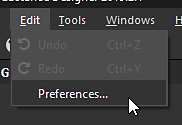
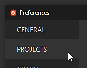
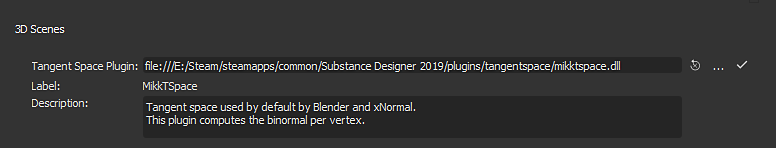

Choose Edit > Preferences.
Substance Bakers can either load the Tangents and Binormals present on the low-poly mesh or recompute them. When recomputing them it is possible to define a custom Tangent Space algorithm (by default it is MikkTSpace).
In Substance Painter the Tangent Space plugin cannot be changed, it will always be MikkTSpace. However there is a parameter to alter slightly its behavior to make it compatible with other applications:
| Parameter | Compatible Application |
|---|---|
| Compute tangent space per fragment: Disabled | Compatible with xNormal, Unity 5.3 or newer. |
| Compute tangent space per fragment: Enabled | Compatible with Unreal Engine 4, Blender and Unity HDRP workflow. |
Substance Designer supports the following algorithm:
| Filename | Description |
|---|---|
| mikktspace.dll | MikkTSpace, Tangent Space algorithm based on Morten S. Mikkelsen work. Compatible with xNormal, Unity 5.3 or newer. |
| mikkunrealtspace.dll | MikkTSpace, Tangent Space algorithm based on Morten S. Mikkelsen work. Compatible with Unreal Engine 4, Blender and Unity HDRP workflow. |
| unitytspace.dll | Tangent Space algorithm based on Unity 4. |
It is possible to write a custom Tangent Space plugin. A header file named tangentspaceplugin.h is available in the installation folder under Substance Designer/SDK/tangentspace and can be used as an interface.
Substance Painter does not support custom Tangent Space plugins at the moment. This means that if Tangents and Binormals are not present on the low-poly mesh (used to create the project) they will be recomputed based on the MikkTSpace algorithm.
To set the tangent space algorithm in Substance Designer follow these steps:
Choose Edit > Preferences.

Click on Projects.

Navigate to the General tab. Scroll until the section 3D Scenes is visible.

Click on the three dots (...) to load a custom plugin.
When baking with the Automation Toolkit it is possible to specify the Tangent Space plugin with a specific command line argument:
sbsbaker normal-from-mesh --tangent-space-plugin "C:/Substance Designer/plugins⁄tangentspace⁄mikktspace.dll" ...